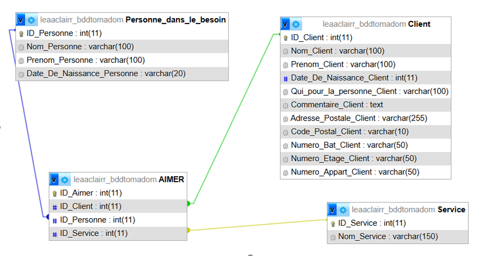

1
Modélisation de la Base de Données

MLD initial : tables Utilisateurs, Prestations et Réservations.
La première étape a consisté à définir les entités nécessaires. Nous avons opté pour une base de données relationnelle MySQL. J'ai créé les tables pour gérer les clients (nom, email, adresse), les types de services proposés et les demandes d'intervention.